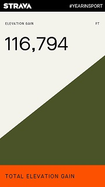
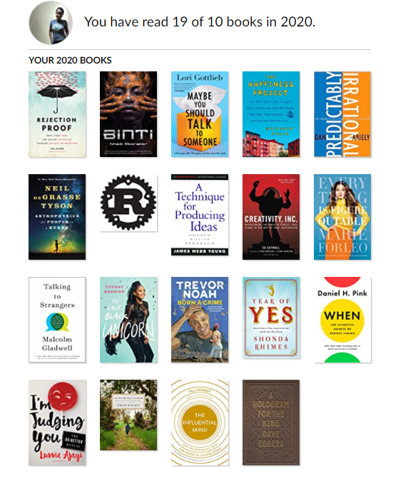
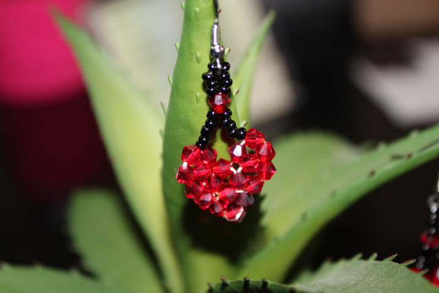

My, what a year! For the first time I’m looking back at a year ago and I feel … different, some degree stronger, some degree wiser, a lot more focused, and ofcourse very different. While the global review of 2020 deserves a series of encyclopedias, this post is about my personal review.
Work ¶
I switched to a new team at Microsoft in the first week of March; the very definition of bad timing. Although I saw my new colleagues in person for a grand total of 3 days, it wasn’t all bad. Don’t get me wrong, onboarding to one of the oldest codebase ever was anything but easy, but one step at a time I got to be an active contributor for your favorite word processor. That said I won’t ever underestimate my ability to adapt. I could get used to working from home, perhaps because I’ve worked remotely for most of my short career or that I appreciate the extra hours in the day, either way I’m excited for what 2021 has to offer.
Fitness ¶
There are many reasons why fitness goals are the most popular resolutions. They are difficult yet achievable, measurable and actionable; with every action, we step a tiny bit out of our comfort zone. My fitness resolutions were to be more consistent, incorporate strength training and run 2 full marathons. I achieved 80% of them, which is 100% more than my expectations. A few highlights …
- Started tracking my workouts on Strava which didn’t hurt on accountability.
- Ran a virtual marathon and a couple of half marathons. Wrote about virtual race experience here
- Picked up biking, trained my way to my first century ride
- Caught the HIIT bug, even wrote about it here
- As a result of consistency, I have climbed the equivalent of Kilimanjaros.

This is no way indication that 2020 was a good year, it just came with more free time and a lot to cope with, for me that translates to more exercise. This year I’d like to keep the momentum and when it’s safe to do so, venture into winter sports and definitely not sign up for any tri-athlon 😁.
Finance ¶
Something about minimalism, investing, home ownership, all the good stuff.
Writing ¶
- Revamped the personal blog which you are now reading.
- Started writing technical posts again, you can find them on dev.to
I have grand plans for 2021 which will start with the million drafts that have been side eyeing me.
Speaking ¶
I got to do virtual speaking engagements even though I was terrified of accepting the invitations.
Didn’t think I would enjoy it until I did. That said, I’m available to speak on all things tech.
Reading ¶

This was one of the rare years where I exceeded expectations on the Goodreads reading challenge. A by-product of listening to audiobooks while walking, making jewellery, doing chores and all the gloriously mundane activities of 2020. I’ve committed to 12 books in 2021 but its a nice to have rather than must-have. The goal of reading is to learn, not to keep score.
Miscellaneous ¶
- I discovered a cool quarantine-friendly, netflix-friendly hobby of making earrings. I’m a big fan of flashy earrings and my main motivation was to save money on my jewellery budget. 40 pairs later, I’m still at it. I also got to auction some off in the annual Microsoft fundraising campaign. You can find my collection here or instagram.

-
Piano: Produced slightly less embarassing clips like the soundtrack of Home Alone.
-
Photography: Managed to score a few more viewbug awards despite scaling down due to stay at home.
And that was my 2020, or rather the quantifiable part. The year that passed in an eye’s blink and yet felt like a century. The year that suprised us, broke us and re-aligned out priorities. Most of us will spend a good chunk of 2021 simply recovering from it. When the wounds turn into scars, I hope we can look back and realize that it was the year of growth. Happy New Year!